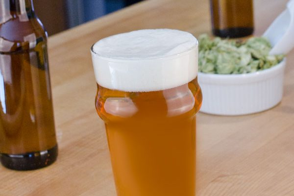

IPA Recipe

American IPA is all about hops; typically American 'C' hops such as, Chinook, Centennial and Cascade, but also the new Pacific varieties from New Zealand and Australia with their tropical fruit aromas. The Rushmore IPA recipe below is a West Coast IPA with just enough caramel and Munich malt to add complexity.
Ingredients
- Fermentables
- 11 lb. (5.0 kg) pale ale malt
- 1 lb. (0.45 kg) Munich malt
- Hops
- 1.0 oz. (28 g) Nugget pellet hops, 13% a.a. (60 min.)
- 0.5 oz. (14 g) Cascade pellet hops, 6% a.a. (15 min.)
- 0.5 oz. (14 g) Amarillo pellet hops, 10% a.a. (15 min.)
- Yeast
- American ale yeast with a sufficient yeast starter (250 billion cells)
Steps
- Mash grains at 153° F (67° C) for 60 minutes.
- Mash out at 168° F (76° C), with pre-boil wort volume of 7 gal. (26.5 L).
- Bring to a rolling boil for 60 minutes, adding hops at specified intervals from end of boil.
- Chill wort to 65° F (18° C) and pitch yeast.
- Ferment in primary at 65° F (18° C) until fermentation slows significantly (7–9 days).
- Rack to secondary fermenter and dry hop for no more than 10 days at 68° F (20° C).
- Keg at 2.5 volumes (5 g/L) of CO₂ or bottle condition with 4 oz. (113 g) corn sugar.